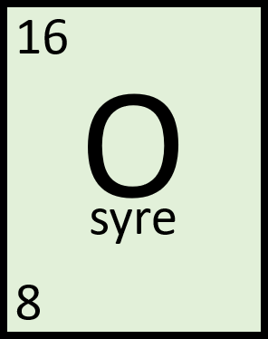

Atom- och kärnfysik#
Ett tag trodde forskarna att de redan hade upptäckt allt inom fysiken. Det var till och med innan hela idén om atomen hade börjat utvecklas på riktigt. Idén om att allt består av atomen kan härledes ända bak till de gamla grekerna men först i början av 1900-talet visade det sig att atomer faktiskt finns - och därmed kunde forskningen om atomer ta fart på riktigt!
Atomen#
Atomen#
En atom består av en positivt laddad atomkärn (protoner och neutroner) som är omgiven av negativt laddade elektroner. Om du vill veta mer, klicka här.
Elektronerna är grupperande i olika elektronskal. Det innersta skaler (K-skalet) kan ha max 2 elektroner. Nästa skal (L-skalet) kan ha max 8 elektroner. Skalen kallas sedan M, N, O, P och så vidare.
Joner#
En atom som har för många eller för få elektroner kallas för en jon och är elektriskt laddad.
Kom ihåg
En atom med färre elektroner än protoner bildar en positiv jon.
En atom med fler elektroner än protoner bildar en negativ jon.
Atomnummer och masstal#
Atomkärnan beskrivs med hjälp av masstal och atomnummer. De anger antalet protoner och neutroner i kärnan.
Kom ihåg
Atomnumret anger hur många protoner som finns i atomkärnan.
Masstalet anger hur många protoner och neutroner som finns i atomkärnan.
Tips
Om du vet atomnumret och masstalet kan du också räkna ut antalet neutroner! Du tar bara masstalet minus atomnumret.
Isotoper#
under konstruktion
Elektromagnetisk strålning#
under produktion#
under produktion
Partikelstrålning#
under produktion#
under produktion
Kärnkraft#
under produktion#
under produktion